Vue02
复习
WEB的发展史:
初始:
HTML+CSS制作静态页面JS出现: 让页面可以有逻辑操作, 灵活
- DOM
jQuery: 把复杂的DOM操作, 通过封装技巧变简单 -- 单词短了,代码少了
Vue:
自动化+工程化思想出现 --巨大变革自动化: 我们只要修改数据, DOM元素会自动变化
Vue相关内容
Vue属于前端三大框架之一: 尤雨溪开发的
3个版本
- 版本1: 淘汰
- 版本2: 主流, 过渡期..
- 版本3: 未来
开发方式分
2种- 脚本方式: 类似jQuery 引入脚本即可. 适合入门 或 简单网页开发
- 脚手架:
工程化的开发方式 -- 主流开发方式
创建Vue对象
new Vue(): 创建时有固定的初始化配置项data: 存储使用到的数据, 可以在HTML中使用
- 数据都是存储在
vue对象里
- 数据都是存储在
el : vue对象服务的元素, 值是 id选择器
methods: 绑定给元素的方法
- 方式中的this指向:
当前vue对象
- 方式中的this指向:
新的语法
在HTML中提供了新的语法, 代表DOM操作
{{}}插值语法, 类似 模板字符串的${}其中可以书写 JS代码属性绑定语法
- vue1写法
v-bind:属性名="" - vue2写法
:属性名="JS代码"
- vue1写法
事件绑定语法
vue1写法
v-on:事件名vue2写法
@事件名使用的差异: 如果方法不需要传递实参
可以省略()<button @click="事件方法" ></button><button @click="事件方法(实参, 实参)" ></button>
插件
推荐一款翻译插件

复习
xxxxxxxxxx<html lang="en">
<head> <meta charset="UTF-8"> <meta http-equiv="X-UA-Compatible" content="IE=edge"> <meta name="viewport" content="width=device-width, initial-scale=1.0"> <title>复习</title></head>
<body> <div id="app"> <!-- vue提供的新语法 {{}}, 在双标签中书写 JS 代码 --> <h1>title: {{title}}</h1> <!-- 属性用 : --> <a :href="baidu.href" :title="baidu.title">{{title}}</a> <a href="baidu.href" title="baidu.title">{{title}}</a>
<h2>点击查看他们的爱好</h2> <div> <!-- 事件关联的方法, 必须书写在methods属性里 --> <button @click="showHobby('壮壮', '范凯')">壮壮</button> <button @click="showHobby('浩浩', '壮壮')">浩浩</button> <button @click="showHobby('文青', '浩浩')">文青</button> <button @click="showHobby('范凯', '文青')">范凯</button>
<!-- 旧思想: 利用DOM查找到元素, 修改他的 innerTHML属性 -- 手动 --> <!-- 新思想: 把一个数据绑定在DOM元素上, 然后数据变化会 自动更新 --> <p>{{msg}}</p> </div> </div>
<script src="./vendor/vue.js"></script> <script> new Vue({ el: '#app', //固定属性: 配置vue对象服务的元素是哪个 // data: 页面上使用的数据 放在此处 data: { msg: '', title: "欢迎来到Vue的世界", baidu: { title: "百度一下", href: "http://www.baidu.com" } }, // methods: 页面上使用的方法, 放在此处 methods: { // 在语法糖的加持下,可以省略 :function // showHobby: function () { } showHobby(name, hobby) { // alert(`${name}喜欢${hobby}`) // 某某某 喜欢 xxx
// 修改数据, 页面会自动变化 this.msg = `${name}喜欢${hobby}` } } })
</script></body>
</html>
事件参数
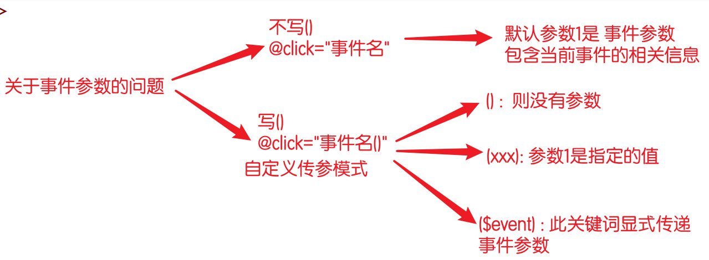
xxxxxxxxxx<html lang="en">
<head> <meta charset="UTF-8"> <meta http-equiv="X-UA-Compatible" content="IE=edge"> <meta name="viewport" content="width=device-width, initial-scale=1.0"> <title>事件参数</title></head>
<body> <div id="app"> <!-- 原生DOM的自定义属性, 代替事件传参写法 showHobby('打篮球') --> <button data-hobby="打篮球" @click="showHobby">壮壮</button> <button data-hobby="唱,跳" @click="showHobby">文青</button>
<!-- 没有主动传参: 默认的参数1 是事件参数 --> <button @click="show">磊磊1</button> <!-- 带有（） 则进入 自定义传参模式 --> <button @click="show()">磊磊2</button> <button @click="show('哈哈哈哈')">柯晗</button> <!-- 自定义传参模式下, 如何传递事件参数 --> <button @click="show($event)">磊磊3</button>
</div>
<script src="./vendor/vue.js"></script> <script> // Vue作者的理念: 0 DOM操作 -- 不会DOM一样用vue new Vue({ el: '#app', methods: { show(name) { console.log('name:', name) },
showHobby(e) { // 事件参数e: 保存了当前事件相关的所有事项 console.log(e) var hobby = e.target.dataset.hobby var name = e.target.innerHTML console.log(name, hobby) } } }) </script></body>
</html>显示/隐藏
xxxxxxxxxx<html lang="en">
<head> <meta charset="UTF-8"> <meta http-equiv="X-UA-Compatible" content="IE=edge"> <meta name="viewport" content="width=device-width, initial-scale="> <title>指令 - 显示/隐藏</title></head>
<body> <!-- 指令: directive --> <!-- vue为元素提供了一些 属性, 带来一些新的效果 --> <div id="app"> <!-- 到后台看 元素 --> <p v-show="true">壮壮</p> <!-- 所有 v- 开头的, 都是vue的指令 --> <p v-show="false">昌昌</p> <!-- 总结: 快速设置 style="display:none" --> </div>
<script src="./vendor/vue.js"></script> <script> new Vue({ el: "#app" }) </script></body>
</html>练习
xxxxxxxxxx<html lang="en">
<head> <meta charset="UTF-8"> <meta http-equiv="X-UA-Compatible" content="IE=edge"> <meta name="viewport" content="width=device-width, initial-scale=1.0"> <title>显示与隐藏</title> <style> #app { width: 300px; }
#app>.title { background-color: #aaa; padding: 10px; user-select: none; }
#app>.desc { background-color: #eee; }
p { margin: 0; padding: 5px; } </style></head>
<body> <div id="app"> <!-- show=其反值 即真的变假的, 假的变真的 --> <!-- HTML的属性需要:, v- 是vue自己的不用加 --> <div class="title" @click="show=!show"> 点击{{show ? '收起' :'查看'}}男嘉宾信息 </div> <!-- vue的思想: 凡是页面上会变的, 必然要绑定一个数据 --> <div class="desc" v-show="show"> <p>姓名: 壮壮</p> <p>年龄: 28</p> <p>格言: 我是晕晕, 带你上王者</p> <p>特长: 无</p> </div> </div>
<script src="./vendor/vue.js"></script> <script> new Vue({ el: "#app", data: { show: false } //初始值false 不显示 }) </script></body>
</html>标签切换
xxxxxxxxxx<html lang="en">
<head> <meta charset="UTF-8"> <meta http-equiv="X-UA-Compatible" content="IE=edge"> <meta name="viewport" content="width=device-width, initial-scale=1.0"> <title>标签栏切换</title> <style> .nav { border-bottom: 1px solid #e4393c; user-select: none; display: flex; background-color: #f7f7f7; }
.nav>span { padding: 10px 30px; }
.nav>span.active { background-color: #e4393c; color: white; }
.desc { padding: 5px; background-color: #eee; /* 最小高度 */ min-height: 40px; } </style></head>
<body> <div id="app"> <div class="nav"> <!-- vue思想: 凡是页面上会变化的, 肯定和数据有关-data -->
<!-- 由于class的切换操作非常常见, 所以作者设置了一个语法 --> <!-- :class="{类名: true/false}" true生效 false无效 --> <!-- :class="对象类型" --> <span :class="{active: n == 0}" @click="n=0">商品介绍</span> <span :class="{active: n == 1}" @click="n=1">规格与包装</span> <span :class="{active: n == 2}" @click="n=2">售后保障</span> <span :class="{active: n == 3}" @click="n=3">商品评价</span> </div> <p>n:{{n}}</p> <!-- 显示切换 v-show --> <div class="desc" v-show="n == 0">壮壮, 年方37, 喜欢打篮球 </div> <div class="desc" v-show="n == 1">三环一套房, 大众一辆, 20W存款</div> <div class="desc" v-show="n == 2">半年包退换, 大壮可选</div> <div class="desc" v-show="n == 3">你是个好人</div> </div>
<script src="./vendor/vue.js"></script> <script> new Vue({ el: "#app", data: { n: 0 } // 代表序号0的高亮 }) </script></body>
</html>
脚手架
后期工作中, 开发环境的完全体状态
脚手架是一个软件, 会自动帮你制作项目包, 包中包含 各种扩展工具, 代码提示, 报错提示...
由于网络 和 电脑环境问题, 有些同学可能无法安装
到百度网盘提前下载:
xxxxxxxxxx第三阶段资源网盘地址https://pan.baidu.com/s/10oVRMBaEDL9uQSB1Jrrc3w提取码: 6666提前下载:

下午第一节课带着安装生成:
小概率会无法安装, 与同学的电脑环境有关
npm环境
node软件, 要求
>=12的稳定版本 :长期支持版本目前最新16.15.1查看版本:
node -v
如果版本不正确, 则需要
卸载->重装npm的下载源: 要求是中国的
查看命令:
npm config get registry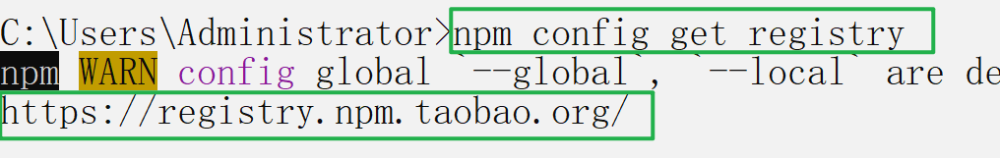
修改为中国镜像:
npm config set registry https://registry.npm.taobao.org
全局按照vue脚手架模块:
不成功 就是镜像单词不对 或 网不好, 按照笔记查xxxxxxxxxxnpm i -g @vue/cli安装后检查: 命令分两种
vue --version或vue -V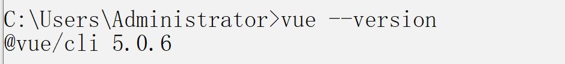
如果
卡住了, 可以尝试按回车.如果版本不是
>=5, 可以尝试升级命令:npm update -g @vue/cli如果无法完成, 从 卸载重装node 开始
还是不好用, 从 重装操作系统开始
还是不好用, 换电脑
使用脚手架
没安装成功的同学不用急, 直接用 之前网盘提供的即可
在你想生成项目包的目录下, 运行创建命令:
注意,目录中不允许有 名字是vue.js的文件
vue create 项目名项目名不允许有大写字母, 只能是
小写字母 - 或 _项目路径中
不允许有中文和特殊符号目录下不能有同名文件夹
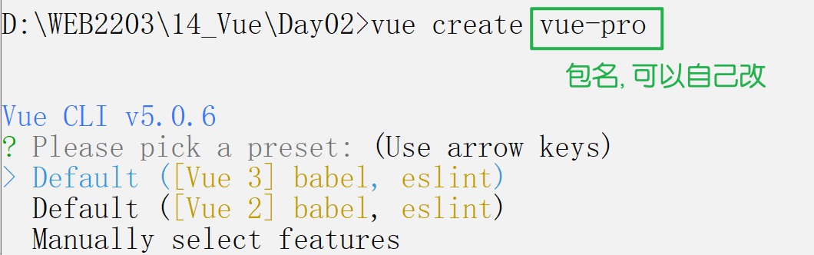
同名报错:

选项: 手动模式
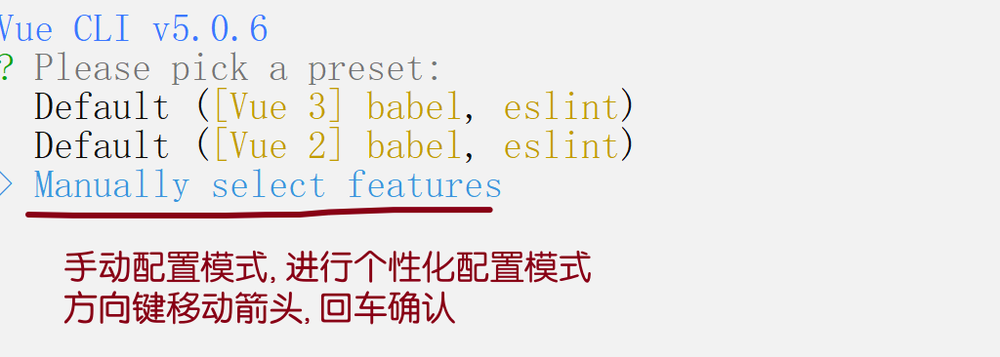
选项

版本2

剩余选项,都是
直接回车, 不用输入任何东西
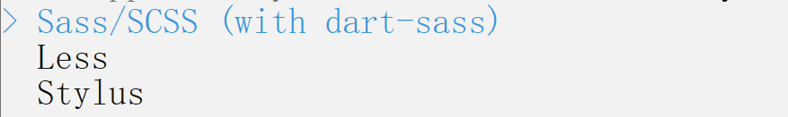
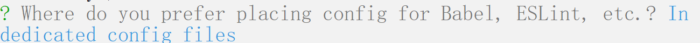
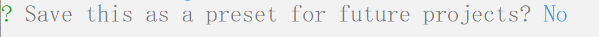
成功后的提示如下:
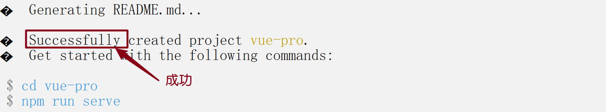
最终得到项目包:

从百度网盘下载的就是这个
运行项目包
脚手架生成的项目包, 非常专业, 其中自带开发服务器, 也只能用这个服务器运行
在vue-pro 目录下执行启动命令: npm run serve

关于端口号, 默认是8080, 但是存在智能切换功能, 如果8080被其他程序占用

关于vscode
vscode 必须
只开启项目包自己, 才能提供专业的服务必须 一对一服务, 才有提示
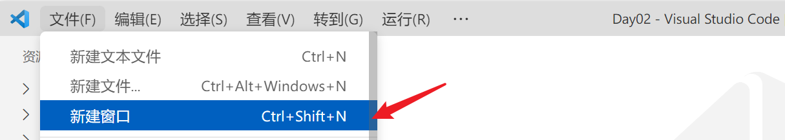


插件
VSCode中有很多插件可以用, 不推荐乱按 -- 代码可能各种波浪线爆红


不要安装此插件, vue3能用, vue2会有很多报错!
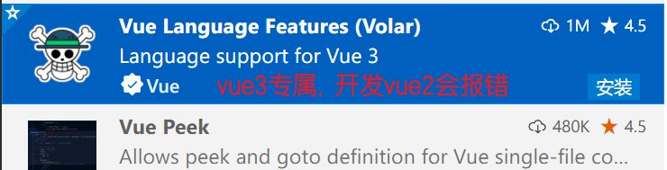
项目包目录结构

main.js

关闭Git功能
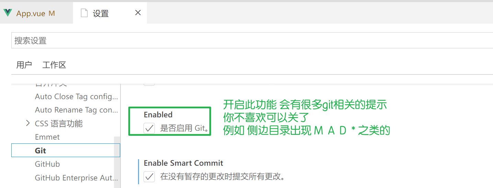
脚手架的细节
项目包创建时: 不能有大写字母, 路径中只能是英文
字母 数字 _ -项目包启动:
npm run serve- vue项目包必须用自带的服务器, 在浏览器手动访问:
localhost:8080
- vue项目包必须用自带的服务器, 在浏览器手动访问:
Vscode: 必须 1对1 服务项目包 才能提供代码提示
插件: 不要装多了, 特别是推荐的 vue3 插件, 在vue2使用有错误
加载流程:
- localhost:8080: 访问的是
index.html - main.js: 引入了 App.vue , 然后加载到
id=app的元素上 - App.vue: 导出vue代码
- localhost:8080: 访问的是
.vue文件: 转为 vue 而生的文件, 写vue代码有各种提示- 注意事件:
只能有一个根元素 - 快捷提示:
<或vbase
- 注意事件:
关于自动保存
每次修改一个代码, 都会自动保存 --好用
但是: vue脚手架项目包自带热更新 -- 检测到代码的保存操作后, 自动刷新服务器
如果 自动保存 + 热更新: 每次输入字符 都会重启服务器;
-- 电脑性能差的同学, 服务器可能会崩溃
-- 如果卡, 就关掉自动保存 -- 要习惯自己
ctrl+S保存代码
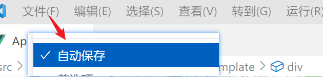
可以改成 失去焦点保存
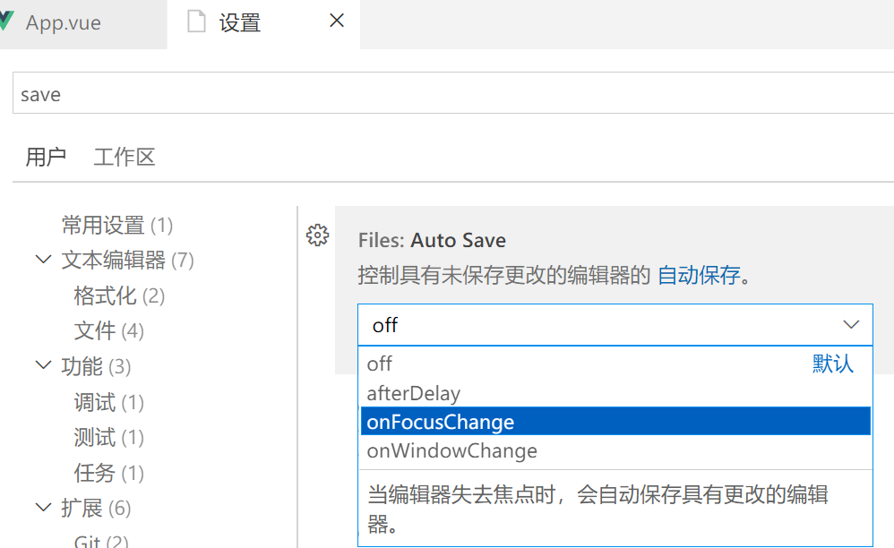
初始
xxxxxxxxxx<template> <!-- 只能一个子元素: vue2的要求 --> <div> <!-- 快速提示: 前提是安装插件 和 独享vscode服务 --> <!-- 使用 < 或 vbase 都可以 --> <!-- 有时 VSCode会主动推荐一些插件 -- 别听他的,不要装, 导致各种报错 --> <h1>Hello Vue!</h1>
<!-- 如果不对: 可能是修改的代码 和 运行的服务器不是同一个项目包 --> </div>
<!-- 规定: vue文件中, 只能有一个根元素 --> <!-- <h1>哈哈哈哈哈</h1> --></template>
<script>// 模块的导出语法 -- JS独有的语法// 成亮版本 module.exports = {}// 亮亮版本 const xx = require('....')
// 新的导出语法 -- 几乎所有语言都是这种写法// export default {}// import xx from '....'
// App.vue 导出内容, 在main.js里引入, 最终显示在index.html的id=app的元素上export default {};</script>
<style lang="scss" scoped>// 如果添加 lang='scss' 报错了, 说明项目包生的不对. 按照笔记重新生
// 有时间复习scss 以后要经常写h1 { background-color: #aaa;}</style>动态style
xxxxxxxxxx<template> <div> <!-- vb生成 --> <!-- 通过复制粘贴 改名, 把代码做备份 --> <!-- 想用的时候, 就把代码粘贴到 App.vue 即可 --> <button @click="num++">{{ num }}</button> <!-- 动态style --> <!-- 格式 :style="{属性名:值}" --> <!-- 命名规范: 属性名不允许 中划线, 改小驼峰 或 字符串 --> <p :style="{ fontSize: `${num}px` }">Hello Vue!</p>
<p :style="{ 'font-size': `${num}px` }">Hello Vue!</p> </div></template>
<script>// 把{}当成是 new Vue({}) 就可以export default { // data: 用于存放数据; 脚手架中 data必须是个函数, 通过return方式返回数据 // 为什么?? 以后讲 -- 与复用有关 // vdata data() { return { num: 10, }; },};</script>
<style lang="scss" scoped></style>if
xxxxxxxxxx<template> <div> <!-- v-if 指令: 通过if判断决定是否要显示元素 --> <button @click="show = true">添加</button> <button @click="show = false">移除</button> <div>show: {{ show }}</div> <p v-if="show">Hello Vue!</p> <!-- v-if的效果是 true显示元素, false隐藏元素; 与v-show相同 --> <!-- 面试经常问: --> <!-- 1. v-if 和 v-show 什么区别 --> <!-- v-if是通过移除/添加DOM元素实现, DOM方式 --> <!-- v-show是通过 display:none 实现, css方式 -->
<!-- 2. 应该使用哪个? --> <!-- 场景1: 元素频繁切换显示与否, 用CSS方式更好 v-show --> <!-- 场景2: 适合一次性的切换, 例如页面的元素需要网络请求的数据 得到后再显示, 用v-if更合适. 可以把CPU资源先用在别的地方 --> </div></template>
<script>export default { // vdata data() { return { show: true, //代表是否要显示 }; },};</script>
<style lang="scss" scoped></style>if-else
xxxxxxxxxx<template> <div> <button @click="getScore">点击获取壮壮的月考成绩</button> <p>分数: {{ score }}</p> <!-- 利用if判断显示不同的评价 --> <p v-if="score == 100">不是本人吧? 禁止作弊!</p> <p v-else-if="score >= 90">优秀</p> <p v-else-if="score >= 60">继续努力</p> <p v-else>2204欢迎你</p> <!-- 看不懂, 去回顾亮亮讲解的 条件分支语句 --> </div></template>
<script>export default { data() { return { score: "", }; }, // vmethod methods: { getScore() { // 如何获取 0~100间的随机数? // 0 - 1 * 101 变为 0 ~ 101 不含101 let a = Math.random() * 101; // 0 ~ 1 不含1 // 向下取值:floor 例如 100.9999 -> 100 小数直接舍去 a = Math.floor(a); console.log(a);
this.score = a; }, },};</script>
<style lang="scss" scoped></style>once
xxxxxxxxxx<template> <div> <div>拍卖剑桥同学的联系方式:</div> <!-- 猜一猜: v-once 什么意思 --> <!-- once: 一次性; 值初始显示后, 后续有变化 不再更新, 保持原样 --> <p v-once>起拍价: {{ price }}</p> <button @click="price -= 5">出价: -5</button> <p>当前价格: {{ price }}</p> </div></template>
<script>export default { data() { return { price: 50, }; },};</script>
<style lang="scss" scoped></style>pre
xxxxxxxxxx<template> <div> <p>{{ uname }}</p> <!-- v-pre: 不解析{{}} 语法, 原样输出 --> <p v-pre>{{ uname }}</p> </div></template>
<script>export default { data() { return { uname: "壮壮", }; },};</script>
<style lang="scss" scoped></style>text与html
xxxxxxxxxx<template> <div> <!-- v-text: 本质就是 innerText. 文本会替换掉标签中原内容 --> <p v-text="kw">111</p> <!-- v-html: 本质就是 innerHTML, 文本会当成HTML解析 替换原内容 --> <p v-html="kw">222</p> </div></template>
<script>export default { data() { return { kw: "<h1>Hello Vue!</h1>", }; },};</script>
<style lang="scss" scoped></style>v-for
xxxxxxxxxx<template> <div> <!-- 以前: 把数据用map映射成html数组, join拼接, 添加到元素中 --> <!-- for..in for..of --> <!-- v-for -->
<!-- 波浪线不用管, 明天讲 -->
<!-- 作者借鉴了 for of/in 的语法, 在vue中 in和of 含义相同, 都是遍历数组没有区别 --> <!-- v-for="变量 in/of 数组" --> <button v-for="skill in skills">{{ skill }}</button> <hr /> <button v-for="skill of skills">{{ skill }}</button> <hr /> <!-- 变量 of 数组: 变量随便起, 但是见名知意是原则 --> <button v-for="suibian of skills">{{ suibian }}</button>
<!-- 序号 --> <hr /> <!-- 固定格式 v-for="(值,序号) of/in 数组" --> <button v-for="(v, i) of skills">{{ i }}, {{ v }}</button>
<!-- 关于波浪线: 可以预习 2202班的 key 的作用 --> </div></template>
<script>export default { data() { return { skills: ["html", "css", "js", "dom", "vue"], }; },};</script>
<style lang="scss" scoped></style>
回顾
指令: 就是vue提供的一些特殊的属性, 都是v-开头
- v-show: 显示还是隐藏, 利用css方式
- v-if: 移除/添加元素
- v-once: 一次性渲染, 后续不更新
- v-pre: 原样输出
{{}} - v-text/v-html: 对应 innerText 和 innerHTML
- v-for: 遍历数组 生成元素
动态样式
class
- :class="{类: true/false}" 真生效 假不生效
style
- :style="{属性名: 值}"
- 注意属性名带
_需要小驼峰 或 字符串
作业
仿作出 百度的 登录页面效果
- 点击账号登录 和 短信登录 会出现不同的内容
- 参考: 今天练习的 京东那个
- 提示: 直接用截图的方式, 把变化的位置截图就行, 不需要自己写 CSS 和 HTML